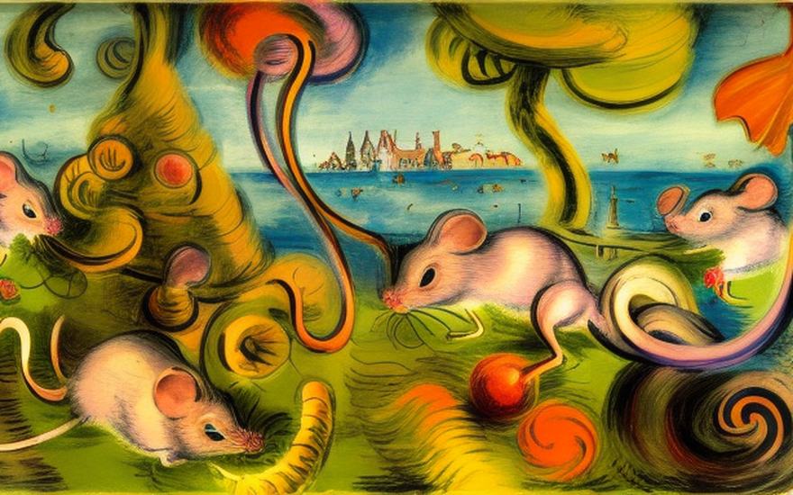
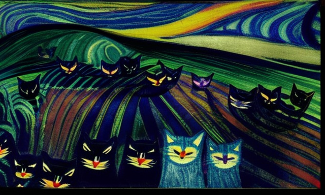
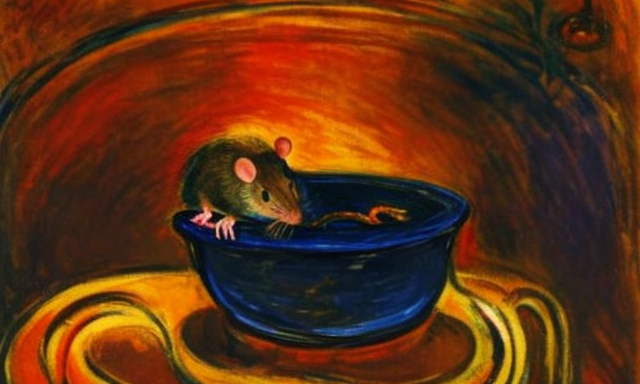
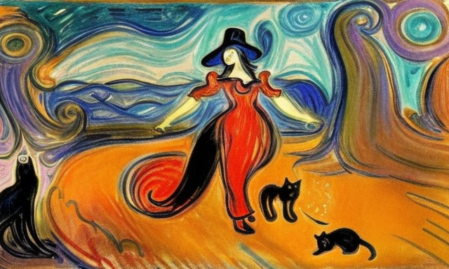
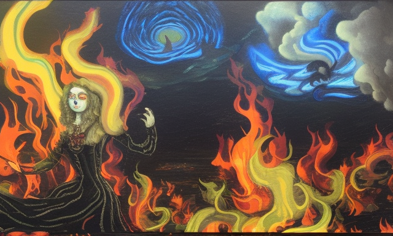

Ο κυνηγός ποντικών και η ειδήμων αιλουροειδών
Αρχική Σελίδα
Πίνακας Περιεχομένων
Ο κυνηγός των αρουραίων

Ήταν μια σκοτεινή και θυελλώδη νύχτα το έτος 1800, στο μικρό χωριό Παδέτιο της Αγγλίας. Ο άνεμος σφύριζε και τα παράθυρα εδέρνοντο απο την βροχή, καθιστώντας αδύνατο για όποιον να κοιμηθεί. Αλλά για μένα, τον Πέτρο τον πρεσβύτερο, τον κυνηγό αρουραίων του χωριού η καταιγίδα δεν αποτελούσε μία απλήν ενόχληση, αλλά έκκληση για δράση.
Ήταν τέτοιες νύχτες που οι αρουραίοι έβγαιναν σωρεία, τρέχοντας στους δρόμους, υπέργεια και υπόγεια, σκορπίζοντας ασθένειες και καταστροφές στον πηγαιμό τους. Το καθήκον μου ήταν να απαλλάξω το χωριό από αυτά τα τρωκτικά.
Άρπαξα την έμπιστη παγίδα για αρουραίους, το φανάρι, και ξεκίνησα εν μέσω της καταιγίδας. Καθώς περπατούσα στους δρόμους, δεν μπορούσα παρά να νιώσω σαν ήρωας, ένας γενναίος πολεμιστής που παλεύει ενάντια στο κύμα των εισβολέων τρωκτικών. Μετά απο λίγο, πήρε το αφτί μου έναν γρατσουνιστό θόρυβο, μέσα στο κοντινό δρομάκι.
Όταν κοίταξα μέσα στο σκοτάδι, φρίκη με κυρίευσε, καθώς είδα δεκάδες αρουραίους, όλοι να τρέχουν γύρω γύρω σε μια χαοτική φρενίτιδα. Ήξερα ότι έπρεπε να δράσω γρήγορα, προτού εξαπλωθούν περαιτέρω.
Έστησα την παγίδα μου και περίμενα, βλέποντας τους αρουραίους να μυρίζουν το δόλωμα και να πιάνονται στα σαγόνια του. Αλλά τη στιγμή που νόμιζα ότι είχα κερδίσει, μια φωνή ακούστηκε από πίσω μου.
“Πέτρο, βλέπω ότι έπιασες αρουραίους. Αλλά τι θα τους κάνεις;” Γύρισα και είδα τον δήμαρχο του χωριού, τον Δόγρασο, να στέκεται εκεί με ένα βλέμμα διασκέδασης στο πρόσωπό του. “Θα τους αφανίσω, φυσικά”, απάντησα προσπαθώντας να διατηρήσω την θαρραλέα μου συμπεριφορά. “Α, λοιπόν, υποθέτω ότι θα πρέπει να γίνει”, είπε με ένα γέλιο. “Αλλά σου προτείνω να πάρεις βοήθεια, Πέτρο. Δεν μπορείς να τους αφανίζεις όλους μόνος σου δια παντός.”
Και με αυτό, απομακρύνθηκε αφήνοντάς με μόνο με τους αιχμάλωτους αρουραίους. Δεν μπορούσα παρά να γελάσω με τον παράλογο όλο αυτό. Αλλά ήξερα ότι η μάχη δεν είχε τελειώσει, οι αρουραίοι θα επέστρεφαν, πολυάριθμοι και δυνατότεροι από ποτέ.Αλλά θα ήμουν έτοιμος, δεν θα με νικούσε ένα μάτσο βρώμικα τρωκτικά που μεταδίδουν ασθένειες.
Η συμμαχία με τις γάτες

Το επόμενο βράδυ, η καταιγίδα είχε περάσει και το χωριό ήταν ξανά γαλήνιο. Αλλά τη στιγμή που ετοιμαζόμουν να αποσυρθώ για το βράδυ, άκουσα μια φασαρία έξω από την πόρτα μου. Το άνοιξα για να βρω ένα παράξενο θέαμα: ένα κοπάδι από γάτες, με επικεφαλής έναν μεγάλο ασπρόμαυρο γάτο, να στέκεται στο κατώφλι μου.
“Εσυ τι θελεις?” Ρώτησα, μπερδεμένος από την ξαφνική εμφάνιση αυτών των αιλουροειδών. Ο γατος προχώρησε και μίλησε: “Έχουμε ακούσει για τη μάχη σας ενάντια στους αρουραίους, και θέλουμε να συμμετάσχουμε στον σκοπό σας.”
Δεν πίστευα στα αυτιά μου. Οι γάτες και οι αρουραίοι ήταν πάντα φυσικοί εχθροί, αλλά αυτές οι γάτες προσφέρθηκαν να με βοηθήσουν να απαλλάξω το χωριό από τα παράσιτα των τρωκτικών. Ήμουν δύσπιστος, αλλά δεν μπορούσα να αρνηθώ την έκκληση να έχω μια ορδή από γάτες ως βοήθεια στην αναζήτησή μου.
“Πολύ καλά, δέχομαι τη βοήθειά σας”, είπα και με αυτό οι γάτες με ακολούθησαν στους δρόμους του Παδέτιο.
Καθώς περπατούσαμε, δεν μπορούσα παρά να προσέξω τον τρόπο που μας κοιτούσαν οι συγχωριανοί με ένα μείγμα μειδιάματος και διασκέδασης. Δεν με ένοιαζε, είχα μια αποστολή να φέρω εις πέρας. Και με τους νέους μου συμμάχους αιλουροειδών, ήμουν σίγουρος ότι μπορούσαμε να το κάνουμε.
Περιπλανηθήκαμε στους δρόμους, αναζητώντας σημάδια παρουσίας αρουραίων. Και σύντομα τα βρήκαμε. Μαζεμένοι σε μια γωνιά, μια ομάδα αρουραίων καταβρόχθιζε ένα καρβέλι ψωμί. Οι γάτες δεν έχασαν χρόνο, όρμησαν στα ανυποψίαστα τρωκτικά πιάνοντάς τα με ευκολία. Δεν θα μπορούσε να μην με εντυπωσιάσει η ταχύτητα και αποτελεσματικότητα των νέων συμμάχων μου.
Όσο περνούσε η νύχτα, πιάναμε όλο και περισσότερους αρουραίους, κάθε φορά προς έκπληξη των χωριανών. Και αρκετά σύντομα, η είδηση της επιτυχίας μας είχε διαδοθεί σε όλο το Παδέτιο. Οι άνθρωποι άρχισαν να με κοιτούν με νέο σεβασμό, και ο δήμαρχος μου πρόσφερε ακόμη και αύξηση των αποδοχών για τις υπηρεσίες μου.
Αλλά ήξερα ότι ο πόλεμος εναντίον των αρουραίων δεν είχε τελειώσει. Θα συνέχιζαν να έρχονται, πιο δυνατοί και πολυάριθμοι από ποτέ. Αλλά δεν ήμουν πια μόνος στη μάχη μου. Είχα δίπλα μου ένα πιστό κοπάδι από γάτες.
Η σωτηρία του χωριού

Με τους νέους συμμάχους στο πλευρό μου, ήμουν σίγουρος ότι μπορούσαμε να κρατήσουμε τους αρουραίους μακριά. Αλλά σύντομα συνειδητοποίησα ότι αυτά τα τρωκτικά δεν νικήθηκαν τόσο εύκολα. Ήταν πονηροί και αποφασιστικοί και ὲτρεφαν ιδιαίτερη αγάπη για τα καζάνια στα οποία μαγειρεύονταν το φαγητό του χωριού.
Παρά τις καλύτερες προσπάθειές μου, οι αρουραίοι συνέχισαν να μπαίνουν κρυφά στα καζάνια, μολύνοντας το φαγητό και μεταδίδοντας ασθένειες. Οι χωρικοί ήταν εξοργισμένοι και ήξερα ότι κάτι έπρεπε να γίνει.
Τότε είχα μια ιδέα. Αν οι αρουραίοι αγαπούσαν τόσο πολύ τα καζάνια, γιατί να μην τα χρησιμοποιήσουμε προς όφελός μας; Έστησα μια παγίδα, δολώνοντάς την με ένα νόστιμο μείγμα τυριού και ψωμιού. Ως αναμενόμενο, οι αρουραίοι έπεσαν με τα μούτρα, μέσα στην παγίδα. Αλλά η νίκη μου ήταν βραχυπρόθεσμη, καθώς οι αρουραίοι συνειδητοποίησαν γρήγορα τι συνέβαινε και απέφευγαν την παγίδα. Ήμουν σε σύγχυση, το επόμενο βήμα ήταν αβέβαιο.
Τότε ήταν που ένας από τους αιλουροειδείς συμμάχους μου, μια φουντωτή ριγωτή γάτα, πρότεινε μια λύση.
“Πέτρο, οι αρουραίοι είναι έξυπνοι, αλλά μπορούμε να είμαστε πιο έξυπνοι. Ας στήσουμε ένα καζάνι με δόλωμα, γεμάτο με μείγμα τυριού και ψωμιού, και ας το αφήσουμε έξω από το χωριό. Οι αρουραίοι θα παρασυρθούν μακριά από τα χωριανά καζάνια, και εμείς μπορούμε να τα πιάσουμε με την ησυχία μας”.
Ήμουν διστακτικός, αλλά απελπισμένος για μια λύση. Ακολούθησα λοιπόν το σχέδιο της ριγωτής γάτας και έστησα το καζάνι με τα δόλωμα. Και ως δια μαγείας, έπιασε. Οι αρουραίοι παρασύρθηκαν μακριά από τα χωριανά καζάνια και κατευθείαν στην παγίδα μας.
Το χωριό σώθηκε για ακόμη μια φορά. Αλλά ήξερα ότι οι αρουραίοι θα ήταν πάντα μια συνεχής απειλή και ότι θα έπρεπε να παραμένω σε εγρήγορση με τους έμπιστους αιλουροειδείς συμμάχους στο πλευρό μου για να τους κρατήσω μακριά.
Η συνάντηση με την μάγισσα

Καθώς περνούσαν οι μέρες, οι αιλουροειδείς σύμμαχοί μου και εγώ είχαμε καταφέρει να κρατήσουμε τους αρουραίους μακριά. Αλλά ήξερα ότι η νίκη μας ήταν μόνο προσωρινή και ότι οι αρουραίοι θα έβρισκαν τελικά έναν τρόπο να μας ξεγελάσουν. Τότε ήταν που αποφάσισα να αναζητήσω έναν ειδικό στις γάτες, κάποιον που να κατέχει την τέχνη της εκπαίδευσης γάτων ώστε να πιάνουν αρουραίους.
Και έτσι, ξεκίνησα ένα ταξίδι για να βρω το ένα άτομο που θα μπορούσε να με βοηθήσει: μια μάγισσα που φημολογούνταν ότι είχε βαθιά κατανόηση των γάτων και των ικανοτήτων τους.
Μετά από μία μακριά και επικίνδυνη διαδρομή, κατέφθασα επιτέλους τη μάγισσα. Ζούσε σε ένα μικρό εξοχικό σπίτι μέσα στο δάσος, περιτριγυρισμένη από γάτες όλων των ικανοτήτων και μεγέθων. “Καλώς ήρθες, Πέτρο”, είπε καλωσορίζοντας καθώς πλησίασα το εξοχικό της. “Σε περίμενα. Έλα να σου δείξω πώς να εκπαιδεύεις τους συμμάχους σου τα γατάκια να γραπώνουν αρουραίους.”
Και με αυτά τα λόγια, με οδήγησε στο σπίτι της, όπου πέρασα τις επόμενες μέρες μαθαίνοντας τα μυστικά της εκπαίδευσης των αιλουροειδών. Μου έμαθε πώς να επικοινωνώ με τις γάτες, πώς να χρησιμοποιώ τα φυσικά τους ένστικτα προς όφελός μου και πώς να τις παρέχω κίνητρα για να κυνηγούν αρουραίους.
Όταν επέστρεψα στο Παδέτιο, οι γάτες ήταν ειδικοί στο να πιάνουν αρουραίους. Ήταν πιο γρήγορες, πιο έξυπνες και πιο αποτελεσματικές από ποτέ.
Οι αρουραίοι δεν ταίριαζαν με τους επιδέξιους πολεμιστές μου αιλουροειδών και σύντομα είχαν εξαλειφθεί από το χωριό. Οι χωρικοί ήταν πολύ χαρούμενοι, και επικρότησαν την επιτυχία μου.
Η απολογία του χωριού

Όταν οι αρουραίοι εξαλείφθηκαν επιτέλους και το χωριό ασφαλές, επέστρεψα στο σπίτι μου στο Παδέτιο, ένας ήρωας στα μάτια των χωρικών. Με ευχαρίστησαν για τις υπηρεσίες μου και μου πρόσφεραν πολλά δώρα και ανταμοιβές για τον κόπο μου. Αλλά υπήρχε ένα πράγμα που δεν μπορούσα παρά να προσέξω, τον ασεβή τρόπο που οι χωρικοί μιλούσαν για τη μάγισσα που με βοήθησε να εκπαιδεύσω τους συμμάχους μου τους αίλουρους.
Μιλούσαν γι’ αυτήν με φόβο και καχυποψία, σαν να ήταν ένα είδος κακού μάγου. Και με έκανε να καταλάβω ότι στο παρελθόν, οι χωρικοί δεν ήταν τόσο ευγενικοί με τις μάγισσες. Κάποιες μάλιστα τους είχαν κάψει δημόσια.
Ήξερα ότι αυτό δεν ήταν σωστό και ότι η μάγισσα που με είχε βοηθήσει έπρεπε να αντιμετωπίζεται με τον σεβασμό και την ευγνωμοσύνη που της άξιζε. Έτσι αποφάσισα να μιλήσω εκ μέρους της.
“Φίλοι μου”, είπα στους χωριανούς. “Δεν πρέπει να φοβόμαστε τη μάγισσα που με βοήθησε. Δεν είναι κακιά μάγισσα, αλλά μία ειδήμονας στις γάτες που ξέρει πώς να τις εκπαιδεύει να πιάνουν αρουραίους. Και χωρίς τη βοήθειά της, δεν θα μπορούσαμε να νικήσουμε τους αρουραίους. Θα έπρεπε να είστε ευγνώμονες για τη βοήθειά της και να της συμπεριφέρεστε με τον πρέποντα σεβασμό”.
Οι χωρικοί άκουσαν τα λόγια μου και ντράπηκαν για τις προηγούμενες πράξεις τους. Οι πρεσβύτεροι του χωριού έφτασαν μάλιστα στο σημείο να ζητήσουν δημόσια συγγνώμη για τυχόν προηγούμενες καύσεις μαγισσών στις οποίες είχαν συμμετάσχει, και ορκίστηκαν να συμπεριφέρονται στους ειδικούς των αιλουροειδών με τον σεβασμό που τους άξιζε. Ζήτησαν συγγνώμη από τη μάγισσα και την παρακάλεσαν για συγχώρεση. Έκτοτε η μάγισσα αντιμετωπίστηκε με τον σεβασμό και την ευγνωμοσύνη που της άξιζε.
Όσο για μένα, συνέχισα να ζω στο Παδέτιο, πάντα έτοιμος να υπερασπιστώ το χωριό από τους αρουραίους, έχοντας στο πλευρό μου τους αιλουροειδείς συμμάχους μου. Και ήξερα ότι όσο είχα τη βοήθειά τους και τη γνώση της μάγισσας, μπορούσα να διαχειριστώ όποιες επιθέσεις αρουραίων.